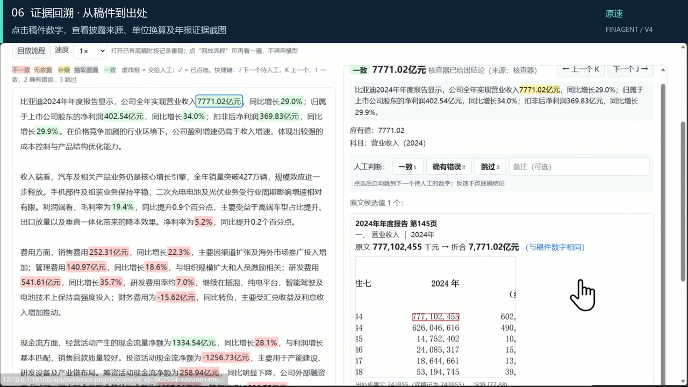
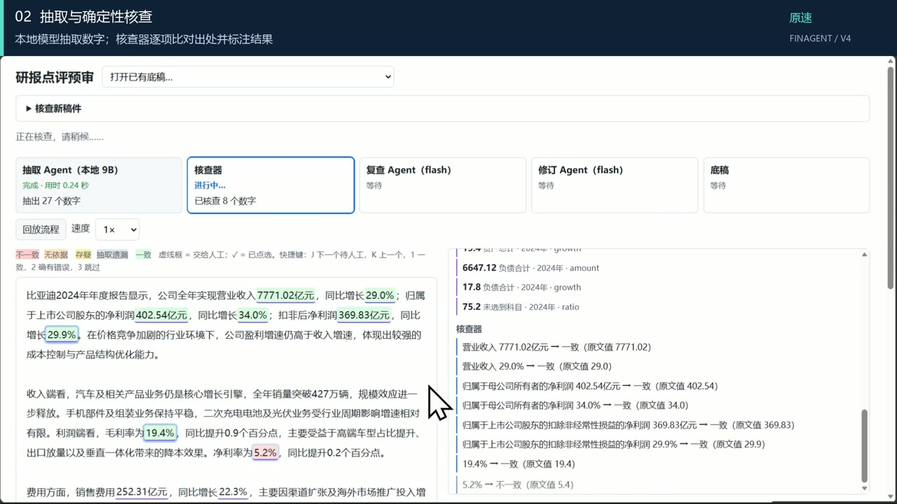
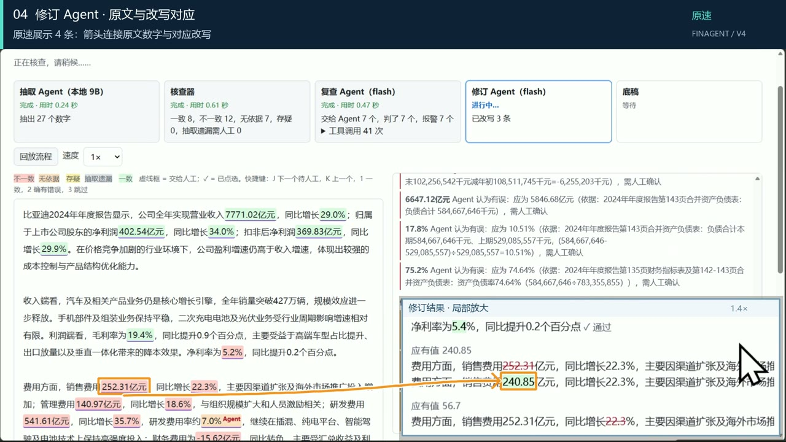

为什么做这个
研报里引用的营收、增速、利润，都应该能在公司年报里找到原文。但质控的人手有限，点评又要赶时间，监管检查里“引用和原文对不上、日期写错”是反复出现的问题。
现在越来越多人用 AI 帮忙写稿，问题更明显：AI 写得很流畅，数字却经常是错的。我实测让通用大模型写年报点评，不给它原文时，大部分数字都有错；就算把原文给它，仍有一成左右的数字出错。
研报稿件任意一篇点评
→
抽取本地 9B 模型找出每个数字
→
核对代码去年报库里查原文
→
复查 Agent补查疑难数字
→
修订 Agent给出改写建议
→
核查底稿每个数字都附出处
背后是一个年报库：30 家上市公司、两万五千多页年报和更正公告，表格里的每个数字都记下了它在 PDF 上的位置，一共 53.7 万条。核对时只用稿件写作日期之前已经发布的文件，避免拿“后来才公布的数”去判当时的稿子。
几个有意思的地方

每个数字都能点回原文
点一下稿件里的“7,771.02 亿元”，右边直接显示它出自比亚迪 2024 年年报第几页、原文写的是 777,102,455 千元、换算后是否一致，还能打开 PDF 原件看框出来的位置。
审核的人不用再自己翻年报，只需要确认系统给的证据。
53.7 万条年报数字，都能定位到 PDF 原文
不让大模型当裁判
最直接的做法是把稿件和年报一起丢给大模型，让它挑错。我试过，它会漏掉很多错，而且漏得很自信。
所以这里模型只负责一件事：把稿件里的数字找出来、标清楚是哪个科目。对不对由代码去年报库里查，查不到就交给人，不替人下结论。抽取用的是我自己微调的 9B 小模型，稿件可以不出本机。
0 vs 111没参与过调试的稿件上，实质性错误的漏检数（本系统 vs 大模型直接审稿）
复查 Agent 只能报警，不能放行
代码查不到的数字，交给复查 Agent 去翻年报、做计算。对比下来发现：它说“这个数错了”基本都对，但它说“这个数没问题”时会混进错误。
所以规则定成：复查 Agent 只能把数字标成“有问题”，不能把数字放行。修订 Agent 也只改判错的那一个数字，句子其他部分由代码检查必须一字不变。
95.3%的错误被找出，误报 2.95%更多实现细节（模型训练、评测集构建、验收方法）欢迎面聊：muzibu77@gmail.com